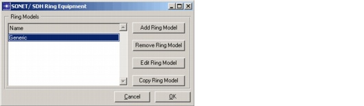
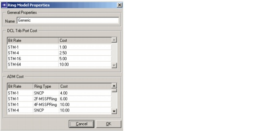

Creating a Baseline Scenario > Equipment Properties > SONET/SDH Ring Equipment
SONET/SDH Ring Equipment
There are two types of node equipment that can be used to support SONET/SDH rings:
- Add-Drop Multiplexers (ADMs). The types and properties of the ADMs are specified in Network > Equipment Properties > SONET/ SDH Ring Equipment.
- Multi-Service Switching Platforms (MSSPs). These are in fact DXCs that also support ring switching functionality. The types and properties of the DXCs are specified in Network > Equipment Properties > SONET/ SDH Mesh Equipment.
You can create different ring models in SP Guru Transport Planner. A ring model should be applied to each SONET/SDH ring in the network. Each ring model can have different cost properties for its ADMs.
- In the SONET/SDH Ring Equipment dialog (Network > Equipment Properties > SONET/ SDH Ring Equipment), you can specify the ring models to be used in the network model.
Figure 3-26 SONET/SDH Ring Equipment Dialog Box

- To set the cost properties of the ring model, click Edit Ring Model. You can set a cost per ADM, which depends on the Ring Type (UPSR, 2F-BLSR or 4F-BLSR) and the bit rate of the ring. In addition, you can set a cost per tributary port that is used on the ADM at a certain bit rate.
Figure 3-27 SONET/SDH Ring Equipment Dialog Box

| Home © 1987-2007 OPNET Technologies, Inc. All Rights Reserved. This software may be covered by one or more U.S. Patents. See complete patent notice in the Legal Notices section. OPNET Support Center |